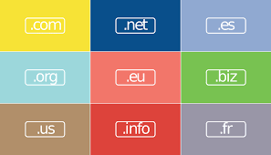
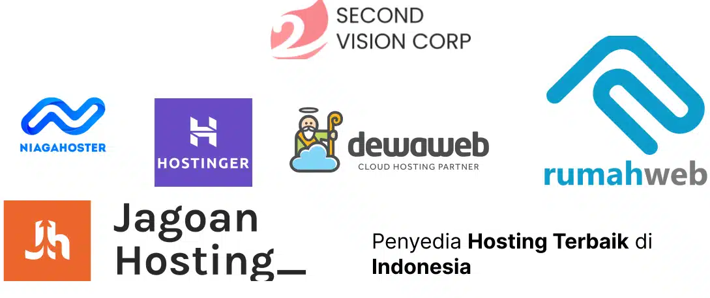

Domain
Domain adalah alamat unik dari sebuah website di internet, seperti www.duniasherjill.com. Fungsinya untuk mempermudah pengguna mengakses website tanpa harus mengingat alamat IP yang panjang.
Fungsi Domain
- Memudahkan pengunjung mengingat alamat website.
- Memberikan identitas profesional bagi bisnis atau individu.
- Meningkatkan kepercayaan dan branding online.
Contoh Domain
- google.com
- tokopedia.com
- instagram.com
Hosting

Hosting adalah tempat menyimpan semua file website Anda seperti gambar, teks, dan kode, agar bisa diakses pengunjung melalui internet.
Fungsi Hosting
- Menyimpan data website agar selalu online.
- Melindungi data dengan keamanan server.
- Meningkatkan kecepatan dan performa website.
Contoh Hosting
- Hostinger
- Niagahoster
- DewaWeb
- DomaiNesia
- IDWebhost
Ekstensi Domain
Ekstensi domain adalah bagian akhir dari alamat domain yang menunjukkan jenis atau kategori website tersebut.
Jenis Ekstensi Domain
- .com — komersial
- .org — organisasi
- .net — jaringan
- .id — website Indonesia
- .edu — pendidikan
Layanan Hosting & Domain
Kami merekomendasikan beberapa penyedia layanan hosting dan domain terbaik di Indonesia maupun internasional:
- Niagahoster
- Hostinger
- Jagoan hosting
- Rumah web
- Dewa webt
Fitur layanan: SSL gratis, backup otomatis, dan dukungan pelanggan 24 jam.